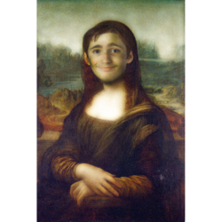

Mona Lisa
Leonardo da Vinci
The Mona Lisa (/ˌmoʊnə ˈliːsə/; Italian: Monna Lisa [ˈmɔnna ˈliːza] or La Gioconda [la dʒoˈkonda], French: La Joconde [la ʒɔkɔ̃d]) is a half-length portrait painting by the Italian Renaissance artist Leonardo da Vinci that has been described as "the best known, the most visited, the most written about, the most sung about, the most parodied work of art in the world".[1] The Mona Lisa is also one of the most valuable paintings in the world. It holds the Guinness World Record for the highest known insurance valuation in history at $100 million in 1962,[2] which is worth nearly $820 million in 2018.[3]
The painting is thought to be a portrait of Lisa Gherardini, the wife of Francesco del Giocondo, and is in oil on a white Lombardy poplar panel. It had been believed to have been painted between 1503 and 1506; however, Leonardo may have continued working on it as late as 1517. Recent academic work suggests that it would not have been started before 1513.[4][5][6][7] It was acquired by King Francis I of France and is now the property of the French Republic, on permanent display at the Louvre Museum in Paris since 1797.[8]
The subject's expression, which is frequently described as enigmatic,[9] the monumentality of the composition, the subtle modelling of forms, and the atmospheric illusionism were novel qualities that have contributed to the continuing fascination and study of the work.[10]